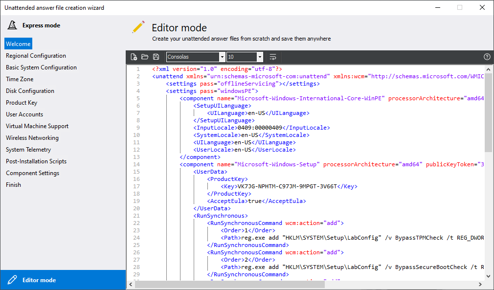

Unattended answer file creator
The unattended answer file creator lets you create unattended answer files compatible with Windows 10 and 11 in 2 ways: an easy-to-use wizard, or a text editor
This tool is available in DISMTools 0.5.1 and later
Creator modes
The creator contains 2 modes: an Express mode and an Editor mode. You can easily switch to either mode by clicking the buttons at the left corners of the window.
Express mode
The express mode is useful for those who have never created answer files before or don't want to use text editors. Simply follow the steps of the wizard, and you will have your file in no time.
If you have a project loaded, DISMTools will let you save your unattended answer files to the unattended answer file folder of your project without you having to change directories. You can obviously save these files anywhere.
Editor mode
The editor mode lets you perform advanced customizations to your unattended answer file to add more things, like additional components or rules. You can operate the editor mode using the buttons in the toolbar.

Requirements
The unattended answer file creator requires the .NET 8 Runtime for the generator program to function. If DISMTools detects that the runtime hasn't been installed, you will be offered the ability to use the self-contained version, which contains the runtime:
If you decide to use this version, DISMTools will save this preference until the self-contained version is removed, either manually, or due to a program update.
Downloading this version will take some time, depending on your network connection speed and computer performance. After the download is complete, you will see a notification in your system tray, depending on what icons are allowed to appear in the tray:
Finally, like with the Windows Image Explorer, you can use the generator program separately. You can check out its repository here
Acknowledgements
Special thanks to Christoph Schneegans for creating the library that makes this creator possible.